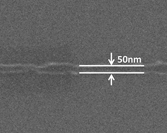
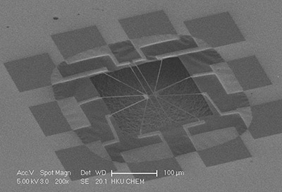
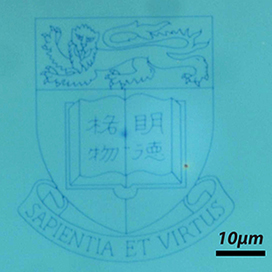

News
2017/09/01
Ms. Dehui Zhang join our group as Ph.D. student, Welcome!
2017/05/23
Congratulations to Jizhuang, Jingzheng, Ze and Baohu for the First Prize of Challenge Cup- HK Regional Finnal！

2017/02/01
Scientific American report our progress on microscopic bots.

2017/02/01
Ms. Jia Dai join our group as Ph.D. student, Welcome!
2016/10/24
Our microswimmer work is highlighted by TV and news papers
Our paper phototactic microswimmer published on Nature Nanotechnology reported by international and local media including TVB news, China daily, Physics Today,Ta Kung Pao etc.
2016/09/01
Mr. Jiawei Chen and Mr.Jun Liu join our group as Ph.D. students, Welcome!
2016/08
Congratulations to Baohu for the first prize of challenge cup - HK Regional Final!
2016/04
Congratulations to Baohu for the 1st runner-up at the 23rd Symposium on Chemistry Postgraduate Research in Hong Kong
2015/09/01
Mr. Xiaojun Zhan joined our group as graduate student. Mr. Chen, Miss Zhang, Mr. Man and Mr. Lee joined us as undergraduate students. Welcome!
2015/04/27
Application for enrollment of Fall 2015 is closed, all applicants has been screened and considered, interested applicants has been contacted directly. Recuiting graduates for fall 2016 is now open. Students who interested in joining our group are encouraged to contact Dr. Tang directly. For students with perticularly strong background, and wish to apply for Hong Kong PhD Fellowship. Please send your CV directly to Dr. Tang for evaluation.
2015/04/27
New equipments are added to our equipment list and are open for use.
Thermal evaporator, magnetron sputter and plasma etcher is installed and fully functional.
2014/11/30
Mr. Jizhuang Wang Joined our group as graduate student. Welcome!
2014/09/01
Mr. Jing Zheng Joined our group as graduate student. Welcome!
2013.12.05
Equipment installed and Open to user
Our lab has finished installment of scanning electron microscope with electron beam lithography capability,
atomic layer deposition system and XeF2 etcher.
Now all equipments are functional and open to group user and outside user.



2013.10.30
Openings for Fall 2014
Graduate and undergraduate students with energy and enthusiasm are very welcome.
Currently our group is recuiting graduates for fall 2014 and exceptionally good undergraduate students for our exciting research projects.
Please contact Dr. Tang and apply to the main round of HKU application to be considered.
We are looking for talented and enthusiastic PhD Students who are interested in nanotechnology to join our team. Since the research is interdisciplinary, the background in Chemistry, Material Science and Nanofabrication is preferred. Please send CV and letter of application with research interest directly to Dr. Tang for consideration.
We are inviting Undergraduate Students who are interested in nanotechnology to join our team.
The student with background in Chemistry, Material Science and physics is preferred. Please contact Dr. Tang directly to apply.
2013/08/29
Mr. Baohu Dai and Yu Cai joined our group as graduate students. Welcome!
2013/03/01
Mr. Ze Xiong joined the lab as our first Graduate student. Welcome!